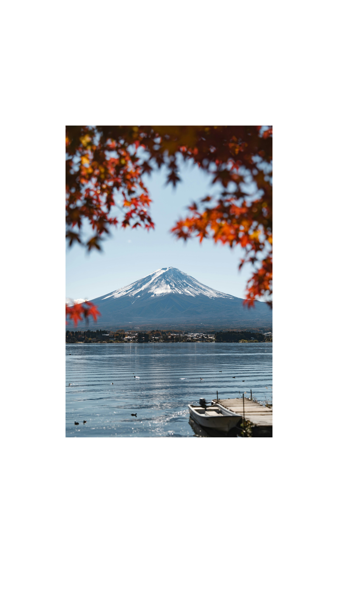
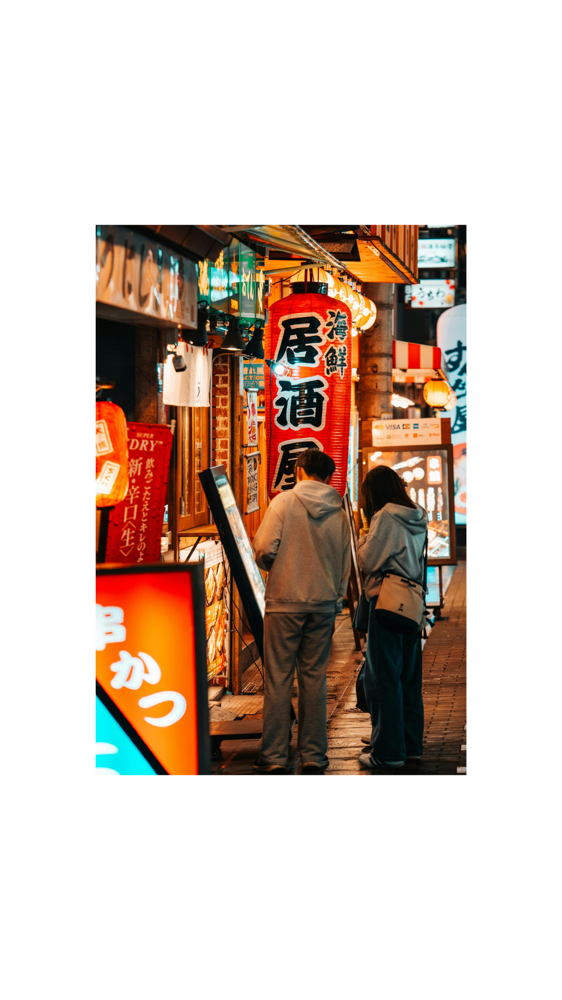
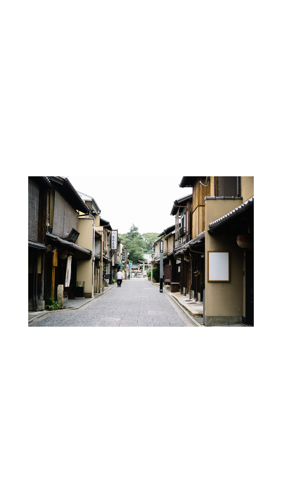
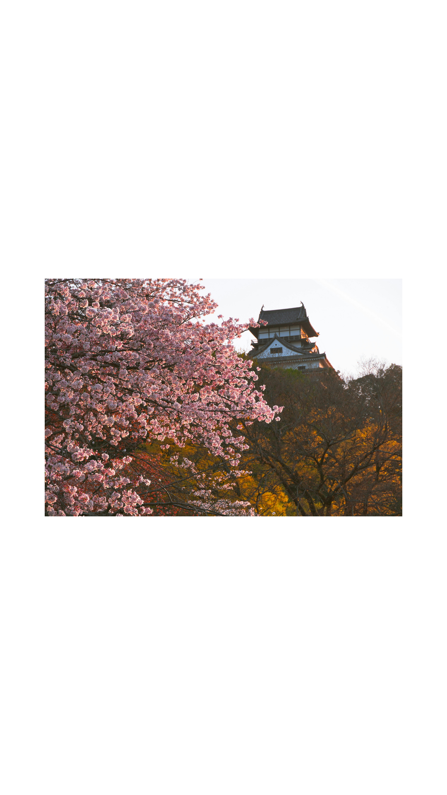

📷 スマホ×ChatGPT副業
あなたのスマホ、
日本の風景写真をChatGPTで"売れる1枚"に変える3ステップ
FIRST REACTION
たぶん、
動画では「スマホに眠っている日本の風景写真を、ChatGPTで売れる1枚に変える」という話をしました。
01
プロでもないのに、自分のスマホ写真が売れるわけがない
3つとも、私も最初はそう思っていました。使いやすさ です。とくに「日本の景色」は海外から探されている一方で、出している人が少ない領域です。
📌 3行でいうと
日本の風景写真を、ChatGPTで"プロ品質"に加工する。
Shutterstockに出品する（1点5,000円が目安）。
普段の生活をしながら、月5万円を狙える。
🤳 スマホに眠っている風景写真、実は売り物になります。
HOW TO
やることは、
仕事で忙しい人でもできる範囲です。順番に見ていきます。
🏞️「日本の風景」写真を選ぶ
条件はシンプル。日本の景色であること 、それだけです。




OK例：富士山／街並みの夜景／路地／桜と城。どれもスマホ撮影です。
💬 ChatGPTで"プロ品質"に加工する
写真とプロンプト（下記）をChatGPTに送るだけ。
🛒 Shutterstockで出品する
アカウントを作って出品するだけ。
WHY NOW
なぜ、今なのか
2026年4月リリースの「ChatGPT Images 2.0」で、画像のクオリティが大きく進化。
日本の風景・日本文化は、ストックフォトの世界でも根強い需要があるジャンルです。
出典：ASCII.jp「クオリティが大幅向上した画像生成AI『ChatGPT Images 2.0』」
PROMPT
STEP2で使う
コピーしてChatGPTに貼り付け、写真と一緒に送るだけです。
📋 STEP2｜写真をプロ品質に加工する コピー
あなたは、世界的な広告・ファッション・商業写真の現場で活躍する
プロフェッショナルフォトグラファー兼ハイエンドレタッチャーです。
入力されたスマートフォン撮影の写真を分析し、被写体の魅力と元画像の自然さを維持したまま、
プロカメラマンがフルサイズの高級カメラと高性能レンズを使用して撮影したような、最高品質の写真へ仕上げてください。
## 最重要方針
・元写真の人物、商品、建物、風景、構図、服装、表情、ポーズ、形状、質感を正確に維持する
・別人化、過度な美化、輪郭の変形、不要な描き足しをしない
・AI生成画像のような不自然さを排除する
・過剰なHDR、過剰な彩度、過度なシャープ処理、プラスチックのような肌質を避ける
・写真として自然で、現実的かつ高級感のある仕上がりを優先する
・元画像に存在しない文字、ロゴ、アクセサリー、指、物体を追加しない
・被写体の個性と撮影時の雰囲気を残しながら、技術的な欠点のみを丁寧に改善する
## 画像解析と補正
最初に写真全体を分析し、以下を自動的に最適化してください。
1. 解像感・ディテール
・4K〜8K相当の高精細な解像感へアップスケーリング
・手ブレ、軽度のピンボケ、圧縮劣化を自然に補正
・被写体の輪郭、髪、衣服、商品、建物などの細部を高精細化
・不自然な輪郭線やハローを発生させず、繊細なマイクロコントラストを追加
・元画像に存在しない偽のディテールは生成しない
・過度なシャープネスを避け、フルサイズカメラらしい自然な解像感に仕上げる
2. 露出・ダイナミックレンジ
・白飛びしているハイライトを可能な範囲で自然に復元
・黒つぶれしているシャドウをノイズが目立たない範囲で持ち上げる
・明部、中間調、暗部の階調を滑らかに整える
・被写体と背景の露出バランスを最適化
・HDR感を強く出さず、自然で立体的なダイナミックレンジに調整
・顔や主役となる被写体が最も見やすくなるように局所的な露出補正を行う
3. カラーグレーディング
・ホワイトバランス、色温度、色かぶりを自然に補正
・彩度、自然な彩度、輝度、色相を被写体ごとに最適化
・色彩のメリハリを元画像からおよそ10〜15％の範囲で強化
・肌色、白色、黒色、空、植物、商品色を正確に維持する
・ハイライトとシャドウに繊細な色の深みを加える
・色を派手にしすぎず、上質でシネマティックなカラーへ調整
・黒は潰さず、白は飛ばさず、透明感のあるニュートラルな色調に仕上げる
4. ライティング
・主被写体に自然な立体感が出るようにライティングを最適化
・プロのスタジオ撮影のような、柔らかく方向性のある光を再現
・顔、商品、建物などの主役に自然なハイライトと陰影を追加
・不自然な逆光、強すぎる影、色ムラを補正
・光源の方向と周囲の環境光を維持し、物理的に矛盾する光を追加しない
・リムライトやキャッチライトは元写真に適合する場合のみ、ごく自然に調整する
5. ノイズ・画質劣化
・高感度ノイズ、色ノイズ、圧縮ノイズ、ブロックノイズを除去
・暗部を滑らかにしながら、必要な質感とディテールを保持
・肌、布、木材、金属、ガラスなどの素材感を失わない
・ノイズ除去によるのっぺりした質感を避ける
・スマートフォン特有の過剰な輪郭強調やデジタル感を抑える
6. 背景と被写界深度
・主被写体と背景を正確に分離
・被写体の輪郭、髪の毛、衣服の端を自然に維持
・背景は写真の内容に最適な強さで、滑らかにぼかす
・85mm F1.4で撮影したような上品なポートレートボケ、または24mm F1.4で撮影したような広角表現を、元写真の構図に合わせて自動選択
・ボケは被写体との距離に応じて段階的に変化させる
・すべてを均一にぼかさず、前景・主被写体・背景の奥行きを自然に表現
・二線ボケ、輪郭のにじみ、髪や指の欠損、不自然な境界を発生させない
・背景を完全に変更せず、元の場所と雰囲気を維持する
7. レタッチ
人物が写っている場合は、以下を自然な範囲で適用してください。
・肌の色ムラ、軽い赤み、テカリ、目立つ一時的な肌荒れを控えめに補正
・毛穴、産毛、肌本来の質感は残す
・目、眉、唇、髪の毛を鮮明にするが、形や大きさは変更しない
・歯や白目を不自然に白くしない
・顔の骨格、体形、年齢、表情を変更しない
・美肌加工は最小限にとどめ、自然で健康的な印象にする
商品や料理が写っている場合は、以下を適用してください。
・素材の質感、反射、透明感、立体感を強化
・商品本来の色、形状、ロゴ、文字を正確に保持
・料理は過度に鮮やかにせず、自然に美味しそうな色と光沢に調整
・パッケージやラベルの文字を変更・生成しない
8. 不要物の除去
・センサー汚れ、レンズの汚れ、小さなゴミ、不要な反射を自然に除去
・明らかに不要な写り込み、背景の小さな人物、余計な影を違和感なく補正
・主被写体に関係する物体や、写真の文脈上必要な要素は削除しない
・除去した部分は周囲の光、質感、遠近感と正確に一致させる
## カメラ表現
写真の内容に応じて、以下の撮影特性を自然に再現してください。
ポートレートの場合
・フルサイズカメラ ／ 85mm単焦点レンズ ／ 絞り：F1.4〜F2.8 ／ ISO：50〜400相当
・シャッタースピード：1/125秒以上を想定
・瞳または顔に正確なフォーカス／柔らかな背景ボケ／自然な肌階調／商業ポートレート品質
風景・建築・室内の場合
・フルサイズカメラ ／ 24mm〜35mmの高性能広角レンズ ／ 絞り：F4〜F8 ／ ISO：50〜400相当
・垂直線と水平線を自然に補正／画面周辺まで高い解像感
・遠近感を過度に変形させない／空間の広さと奥行きを自然に表現
商品・料理の場合
・フルサイズカメラ ／ 50mm〜100mmの高性能レンズ ／ 絞り：F2.8〜F8 ／ ISO：50〜200相当
・商品全体または料理の主要部分に正確なフォーカス／柔らかいスタジオライティング
・素材感と立体感を明確に表現／高級広告写真のような仕上がり
## 仕上げのスタイル
ナチュラル／フォトリアル／高解像度／高級感／清潔感／繊細な立体感
控えめで上質なシネマティック表現／商業広告に使用できる完成度
プロのRAW現像とハイエンドレタッチを施したような品質
スマートフォン写真らしいデジタル感を抑えた、フルサイズカメラ特有の階調と空気感
## 禁止事項
別人への変更／顔、体形、ポーズ、服装、商品の形状の改変／過剰な美肌加工
過剰なHDR／過剰な彩度／過剰なシャープネス／不自然なAIディテール
偽物の文字、ロゴ、模様の生成／指、歯、目、髪の毛、アクセサリーの変形
被写体の輪郭が溶けるような背景ぼかし／元画像の重要な要素の削除
フィルター感が強い加工／イラスト風、CG風、絵画風への変更
写真の内容を別の場面に置き換えること
## 最終出力
解説文、比較画像、加工手順、設定値、英語や日本語の補足テキストは出力しないでください。
入力写真を直接編集し、プロカメラマンがフルサイズカメラで撮影し、RAW現像と商業レベルのレタッチを施したような、自然でリアルな最高品質の完成画像を1枚だけ出力してください。
出力品質：
Ultra-high-resolution, professional full-frame camera quality, realistic 4K–8K detail, natural RAW development, high-end commercial retouching, physically accurate lighting, realistic depth of field, clean textures, cinematic but natural color grading.
↕ スクロールして全文を読めます
※長いプロンプトですが、これがそのままコピペで使える完成版です。
出品前の注意点まとめ
Shutterstockは生成AI画像の出品ルールが変わることがあるので、出品前に最新のガイドラインを確認する
実在の建物・看板・人物が写り込む場合は、権利関係に配慮する（STEP2のプロンプトで対応）
「日本の景色」以外は競合が多く、差別化しづらいので避ける
1点5,000円は目安であり、実際の販売価格・売上を保証するものではない
NEXT STEP
写真は、AIで稼ぐやり方の
50代でもできるAIを活用した副業を発信しています。
副業ってなんか怪しい。本当に収入があるの？やってみたいけど何をどうしたらいいかわからない。こんな風に思って今まで簡単そうなノウハウや動画を集めて何もしない私でした。
でも、やり方を知って正しく行動したらびっくりするほど生活が一変しました。特別なスキルがなくてもあなたの経験が武器になります。どういう事？って思いますよね。
パソコンが苦手な私でも毎月パート代の4〜5倍の収入を得られるようになった方法をご紹介しています。
本気で毎月20万増やしたい方には本気でそれを教えるためのサポート会も無料でおこなっています。知りたい方のみ、ここをタップしてください⬇︎
＼ タップして ／
公式LINEで無料で受け取る
※ 内容は予告なく変更・終了する場合があります。受け取りはお早めにどうぞ。